Part I generates a completely known biomass for every year and cell of the domain. No fishing process is simulated at this stage. The central identity is
\[ \begin{aligned} B(y, s) &= B_{total}(y)\; p(y, s) \\ p(y, s) &= \frac{D(y, s)\, A_s}{\sum_{s'} D(y, s')\, A_{s'}} \\ \log D(y, s) &= E(y, \text{lat}_s) + H(s) + G(s) + Z(s) + \varepsilon(y, s) \end{aligned} \]
where \(A_s\) is the geodesic area of the cell. The terms are:
- \(E\) is the latitudinal envelope, which may change in time (redistribution);
- \(H\) are the hotspots and \(G\) a longitudinal gradient;
- \(Z\) is a persistent Gaussian random field;
- \(\varepsilon\) is spatio-temporal AR(1) noise.
By construction \(\sum_s p(y,s) = 1\) and \(\sum_s B(y,s) = B_{total}(y)\) in every year.
library(pelagicOM)
library(ggplot2)
cfg <- om_biomass_config("BET_ICCAT")
sim <- simulate_biomass(cfg)
#> == 1. Spatial domain =============================
#> domain BET-A: 10051 cells | lattice 130 x 140
#> == 2. Total biomass ==============================
#> phase period B_mean dep_ini dep_end u_mean
#> Q1 1950-1968 977388 0.950 0.968 0.0229
#> Q2 1969-1987 686371 0.870 0.510 0.1240
#> Q3 1988-2006 319283 0.477 0.173 0.2478
#> Q4 2007-2025 198468 0.179 0.318 0.2087
#> == 3. Static spatial structure ===================
#> == 4. Redistribution and spatio-temporal noise ===
#> == 5. Composition B(y, s) ========================
#> long table: 763876 rows (76 years x 10051 cells)The random draws always happen in the same order, so the same seed gives the same result:
- the process error of \(B_{total}\);
- the persistent field \(Z\);
- one Gaussian field per year for \(\varepsilon\).
1. Total biomass
\(B_{total}(y)\) follows a Pella-Tomlinson surplus-production model with an exogenous removal rate \(u(y)\):
\[ \begin{aligned} SP(y) &= \tfrac{r}{p}\, B(y)\,\big(1 - (B(y)/K_y)^p\big) \\ B(y+1) &= \max\Big(\big[B(y) + SP(y) - u(y)\, B(y)\big]\, e^{\epsilon_{y+1}},\; B_{floor}\Big) \end{aligned} \]
The process error \(\epsilon\) is AR(1), bias corrected so that \(E[e^{\epsilon}] = 1\). \(K_y = K (1 + K_{trend})^{y - y_0}\).
str(cfg$population)
#> List of 14
#> $ model : chr "pella_tomlinson"
#> $ K : num 1e+06
#> $ r : num 0.3
#> $ shape : num 1
#> $ B0_frac : num 0.95
#> $ u_base : num 0.02
#> $ decline :List of 3
#> ..$ start : num 1965
#> ..$ end : num 1995
#> ..$ u_peak: num 0.26
#> $ recovery :List of 3
#> ..$ start: num 2012
#> ..$ end : num 2025
#> ..$ u_end: num 0.12
#> $ u_smooth : num 5
#> $ K_trend : num 0
#> $ proc_sd : num 0.05
#> $ proc_rho : num 0.4
#> $ events : list()
#> $ B_floor_frac: num 0.001
reference_points(cfg$population)
#> $K
#> [1] 1e+06
#>
#> $r
#> [1] 0.3
#>
#> $shape
#> [1] 1
#>
#> $Bmsy
#> [1] 5e+05
#>
#> $MSY
#> [1] 75000
#>
#> $umsy
#> [1] 0.15The removal rate is drawn by phases: stable (u_base), a
linear decline up to u_peak, a plateau, a recovery down to
u_end, and stable again. The result is smoothed by a moving
average of u_smooth years. Shocks (events)
multiply the biomass in given years:
fig_total_biomass(sim)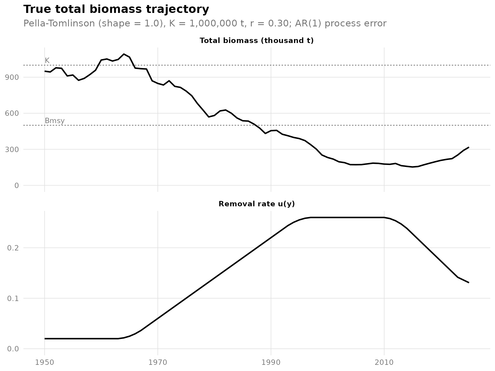
head(sim$pop)
#> Year B_total K_year u Surplus Removal Proc_error Depletion B_Bmsy
#> 1 1950 950000.0 1e+06 0.02 14250.000 19000.00 -0.004677681 0.9500000 1.900000
#> 2 1951 943623.4 1e+06 0.02 15959.493 18872.47 -0.001722335 0.9436234 1.887247
#> 3 1952 978115.8 1e+06 0.02 6421.595 19562.32 0.038992708 0.9781158 1.956232
#> 4 1953 974045.8 1e+06 0.02 7584.180 19480.92 0.009356064 0.9740458 1.948092
#> 5 1954 910712.7 1e+06 0.02 24394.532 18214.25 -0.054941928 0.9107127 1.821425
#> 6 1955 918052.9 1e+06 0.02 22569.538 18361.06 0.001264269 0.9180529 1.836106population$model can also be "logistic" or
any function f(B, K, r, shape) that returns the surplus
production (see Tuning).
2. Static habitat
The static part of the log-density is fixed in time and contains:
-
Latitudinal envelope. A Gaussian on latitude,
centred at
lat_center, with different standard deviations north and south (envelope_type = "latitude", the tropical core of Experimento 02). Withenvelope_type = "abs_latitude"it is a Gaussian on the absolute latitude instead: two symmetric bands, as for temperate species. - Hotspots. Gaussian elevations at fixed positions.
-
Longitudinal gradient, log-linear
(
lon_gradient). -
Persistent random field with standard deviation
field_sdand spatial rangefield_range(degrees). It is obtained by smoothing white noise with a separable Gaussian kernel on the lattice, normalised so that every cell has the same marginal standard deviation. -
User layer (optional),
custom_effect(cells), for example a habitat covariate.
str(cfg$habitat)
#> List of 9
#> $ envelope_type: chr "latitude"
#> $ lat_center : num 0
#> $ lat_sd_north : num 11
#> $ lat_sd_south : num 11
#> $ hotspots :List of 2
#> ..$ :List of 5
#> .. ..$ lon : num -5
#> .. ..$ lat : num 0
#> .. ..$ sd_lon: num 10
#> .. ..$ sd_lat: num 5
#> .. ..$ amp : num 0.9
#> ..$ :List of 5
#> .. ..$ lon : num -32
#> .. ..$ lat : num 4
#> .. ..$ sd_lon: num 9
#> .. ..$ sd_lat: num 5
#> .. ..$ amp : num 0.6
#> $ lon_gradient : num 0
#> $ field_sd : num 0.45
#> $ field_range : num 4
#> $ custom_effect: NULL
fig_base_habitat(sim)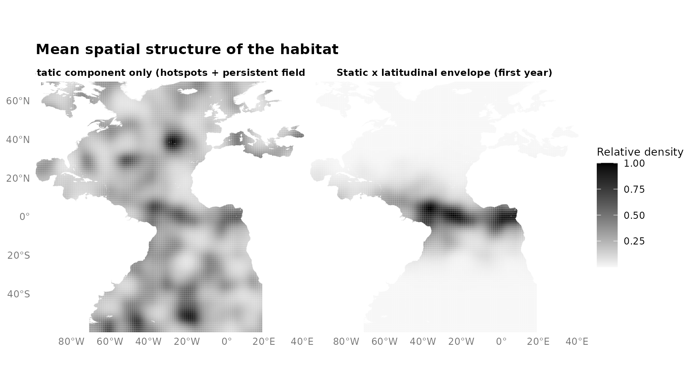
The components are stored in sim$base:
layer <- function(value, component) {
x <- sim$dom$geometry
x$value <- value
x$component <- component
x
}
comp <- rbind(layer(sim$base$hotspots, "Hotspots H(s)"),
layer(sim$base$field, "Persistent field Z(s)"),
layer(sim$base$envelope0, "Envelope E(first year, lat)"))
ggplot(comp) +
geom_sf(aes(fill = value), colour = NA) +
scale_fill_gradient2(low = "grey20", mid = "white", high = "black") +
facet_wrap(~component) + coord_sf(expand = FALSE) +
labs(fill = "log scale") + theme_pub(base = 9) +
theme(legend.position = "right", panel.grid.major = element_blank())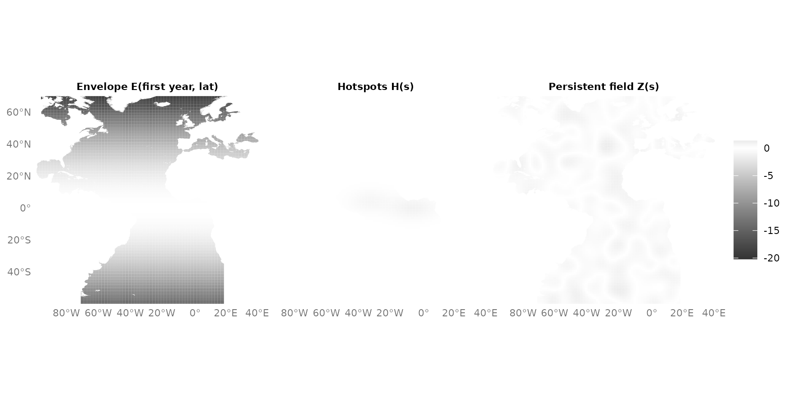
gaussian_random_field() is the building block of the
random fields:
set.seed(1)
f <- gaussian_random_field(list(n_row = 60, n_col = 120), range = 4, sd = 1)
image(t(f), col = grey.colors(50), axes = FALSE, main = "range = 4, sd = 1")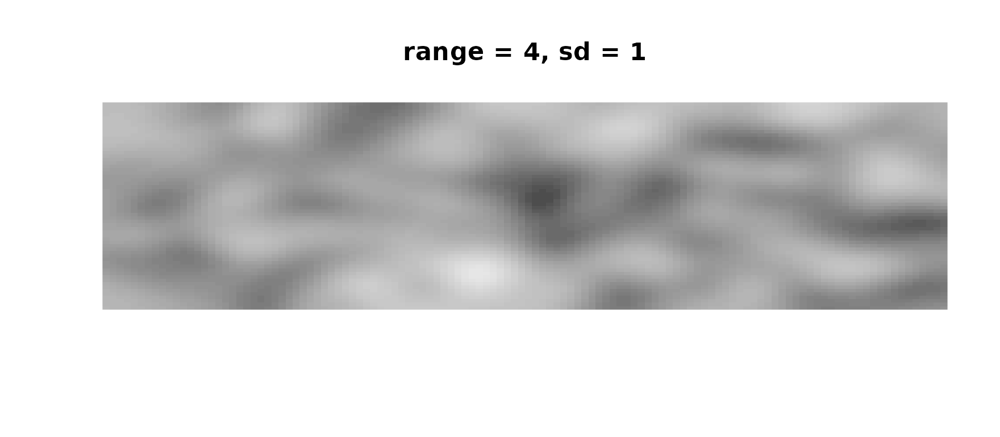
3. Redistribution in time
The envelope changes along a ramp \(f(y)
\in [0, 1]\) (linear or logistic) between
shift$start and shift$end:
\[ \begin{aligned} sd_{north}(y) &= sd_{north}\,\big(1 + \text{north\_expansion}\; f(y)\big) \\ sd_{south}(y) &= sd_{south}\,\big(1 + \text{south\_expansion}\; f(y)\big) \\ c(y) &= c + \text{center\_drift}\; f(y) \end{aligned} \]
An optional equatorial contraction lowers the log-density within
\(|\text{lat}| <\)
eq_band. The weights are renormalised every year, so a
wider envelope moves share from the central region to the outer regions
without changing \(B_{total}\).
str(cfg$shift)
#> List of 10
#> $ enabled : logi TRUE
#> $ start : num 1950
#> $ end : num 2025
#> $ ramp : chr "linear"
#> $ ramp_steepness : num 8
#> $ north_expansion : num 0.7
#> $ south_expansion : num 0.7
#> $ center_drift : num 0
#> $ equatorial_contraction: num 0
#> $ eq_band : num 10
head(sim$envelope_params, 3); tail(sim$envelope_params, 3)
#> Year ramp center sd_north sd_south eq_contr
#> 1 1950 0.00000000 0 11.00000 11.00000 0
#> 2 1951 0.01333333 0 11.10267 11.10267 0
#> 3 1952 0.02666667 0 11.20533 11.20533 0
#> Year ramp center sd_north sd_south eq_contr
#> 74 2023 0.9733333 0 18.49467 18.49467 0
#> 75 2024 0.9866667 0 18.59733 18.59733 0
#> 76 2025 1.0000000 0 18.70000 18.70000 0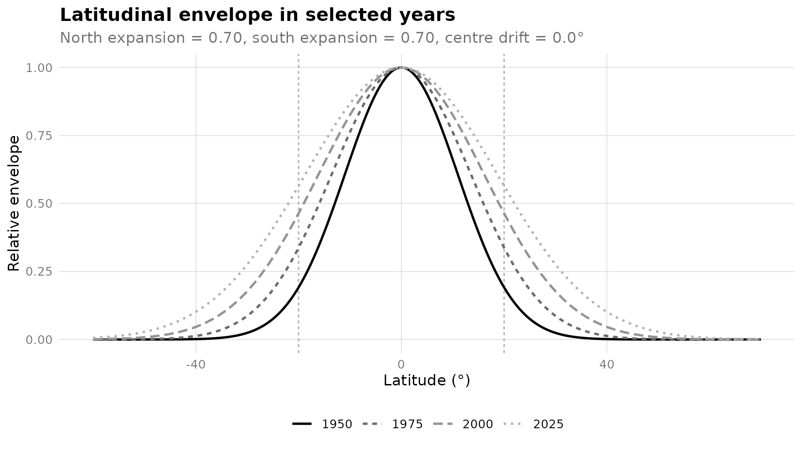
The same stock with and without redistribution:
sim_off <- simulate_biomass(om_config_update(cfg, shift = list(enabled = FALSE)),
long_table = FALSE, verbose = FALSE)
reg <- rbind(transform(regional_summary(sim), run = "shift on"),
transform(regional_summary(sim_off), run = "shift off"))
ggplot(reg, aes(Year, Share, colour = Region, linetype = run)) +
geom_line(linewidth = 0.7) +
scale_colour_manual(values = c(R01 = "grey55", R02 = "black",
R03 = "grey30")) +
labs(y = "Share of total biomass") + theme_pub()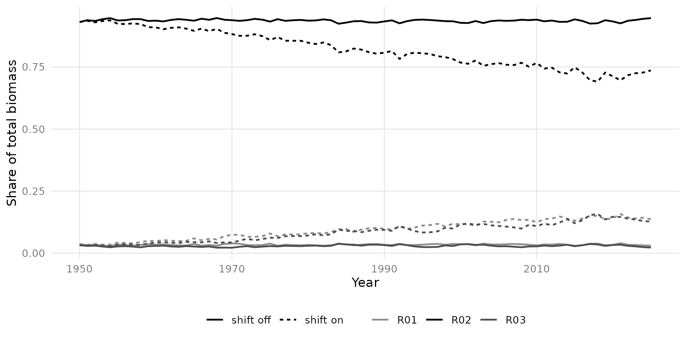
4. Spatio-temporal noise
\[ \varepsilon(y, s) = \rho\, \varepsilon(y-1, s) + \sqrt{1 - \rho^2}\; \xi_y(s) \]
where the \(\xi_y\) are independent
Gaussian fields with standard deviation sd and range
range. The marginal standard deviation is sd
in every year and the temporal correlation at lag \(k\) is \(\rho^k\).
5. Composition and the long table
The object returned by simulate_biomass() holds the
matrices (cells x years) envelope, noise,
logD, weights and biomass. It
also holds the long table table, one row per year and cell,
which is the main product of Experimento 02:
sim
#> <pelagicOM biomass truth> label 'base' | seed 20261005
#> 10051 cells x 76 years (1950-2025) | stock area BET-A
#> B_total: 950,000 t (1950) -> 318,101 t (2025) | B/K 0.95 -> 0.32 | Bmsy 5e+05 t
#> regional share: R01 0.04 -> 0.14 | R02 0.93 -> 0.74 | R03 0.03 -> 0.13
dim(sim$biomass)
#> [1] 10051 76
head(sim$table, 3)
#> Year Cell_ID Longitude Latitude Region Area_km2 B_total Spatial_weight
#> 1 1950 5100000 0.5 0.5 R02 12308.78 950000 0.001268668
#> 2 1950 5100001 1.5 0.5 R02 12308.78 950000 0.001301248
#> 3 1950 5100002 2.5 0.5 R02 12308.78 950000 0.001338848
#> Biomass Density Relative_biomass Depletion
#> 1 1205.234 0.09791664 2.114591 0.95
#> 2 1236.186 0.10043121 1.983669 0.95
#> 3 1271.906 0.10333324 1.916429 0.956. Diagnostics
check_simulation() runs two groups of checks:
- Structural checks stop the run when they fail: the identities above, no NA, Inf or negative values, unique Year x Cell, coherent regions.
- Pattern checks only warn: the central region is the densest at the start, and an active redistribution shifts share towards the outer regions.
chk <- check_simulation(sim)
#> identities: max|sum p - 1| = 1.11e-16 | max rel |sum B - B_total| = 1.41e-16
#> mean density in the first year (t/km2): R01=0.0010 R02=0.0328 R03=0.0011
#> share (mean of the first vs last 10 years): R01 0.039 -> 0.144 | R02 0.928 -> 0.716 | R03 0.033 -> 0.140
#> redistribution active: TRUE
check_reproducibility(cfg)
#> reproducibility: OK (two identical runs)Summaries used by the figures:
head(regional_summary(sim), 3)
#> Year Region N_cells Area_km2 Biomass Share Mean_density
#> 1950 1950 R01 4519 33645806 34833.40 0.03666674 0.001035297
#> 19501 1950 R02 2368 26975142 884745.28 0.93131082 0.032798541
#> 19502 1950 R03 3164 28135728 30421.32 0.03202244 0.001081235
head(centre_of_gravity(sim), 3)
#> Year Lat_cg Lon_cg Abs_lat_cg Lat_cg_north Lat_cg_south Share_north
#> 1950 1950 0.2079612 -23.21777 7.586072 7.567370 -7.605928 0.5149763
#> 1951 1951 0.5444269 -22.64779 7.493810 7.571825 -7.405554 0.5307992
#> 1952 1952 0.4736220 -22.91766 7.582404 7.668030 -7.487651 0.5252996
head(latitude_profile(sim), 3)
#> Year Lat_band Density
#> 1 1950 -59.5 2.602283e-08
#> 2 1950 -58.5 4.345013e-08
#> 3 1950 -57.5 7.213174e-08
fig_maps(sim)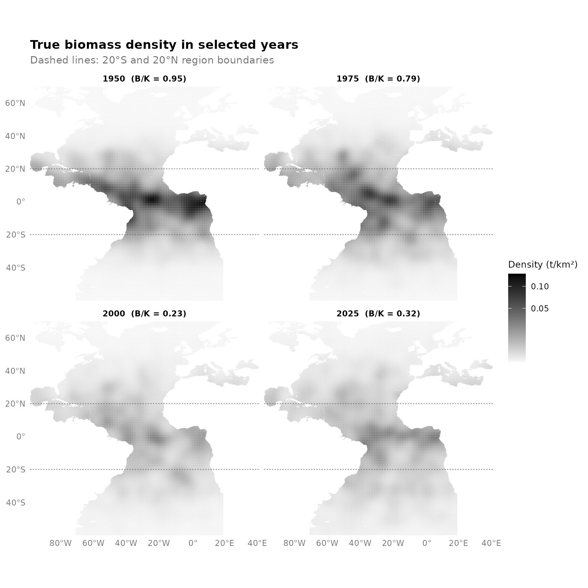
fig_region_biomass(sim)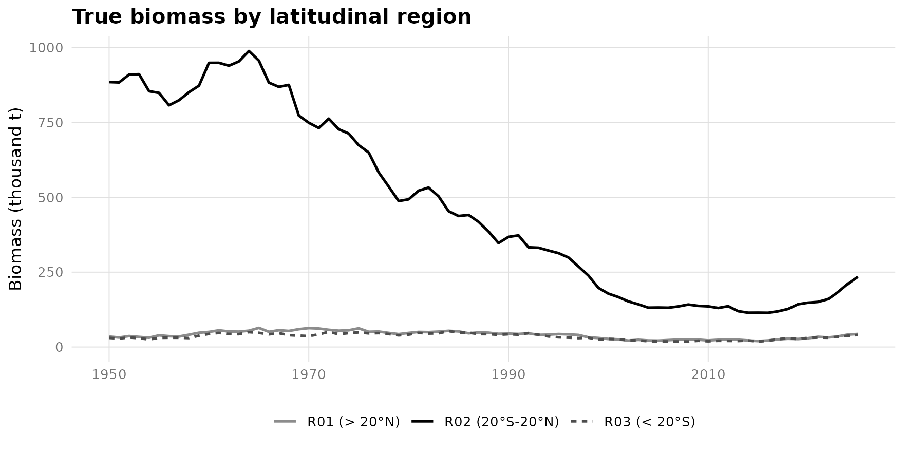
fig_region_share(sim)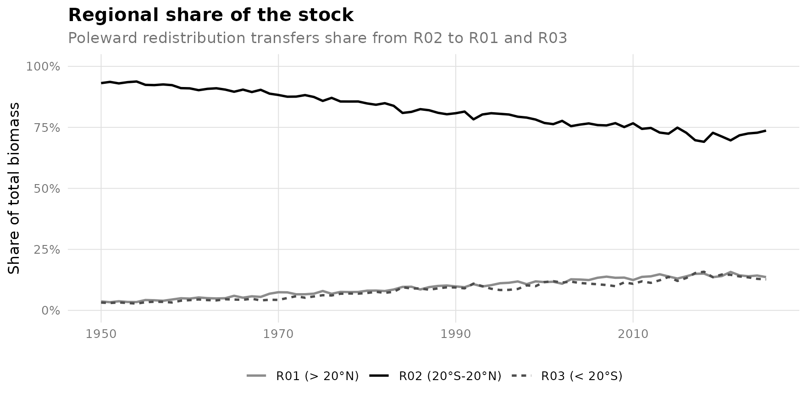
fig_centre_gravity(sim)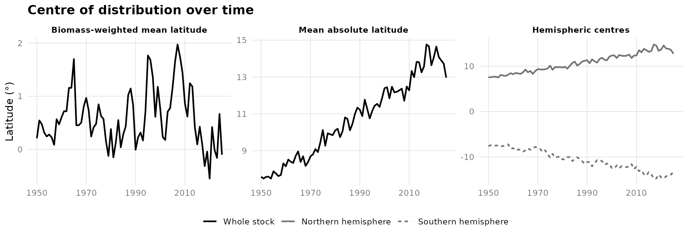
fig_hovmoller(sim)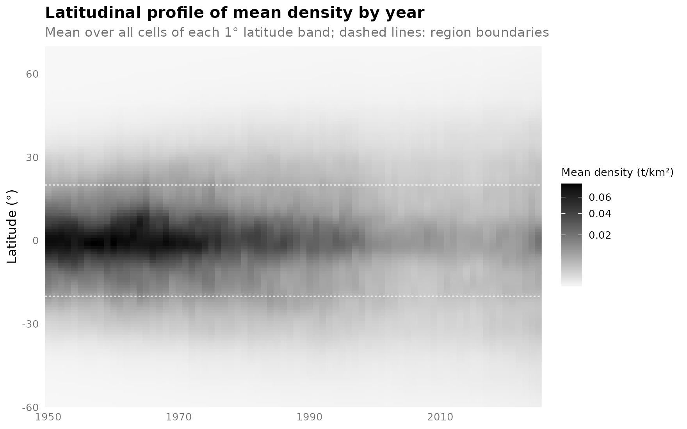
All eight figures can be built at once with
biomass_figures(sim) or saved as PNG with
make_biomass_figures(sim, dir).
7. Reproducibility
The whole run is controlled by cfg$general$seed.
simulate_biomass() seeds its own random stream with the RNG
kinds of Experimento 02 (Mersenne-Twister, Inversion, Rejection) and
restores the caller’s stream on exit: